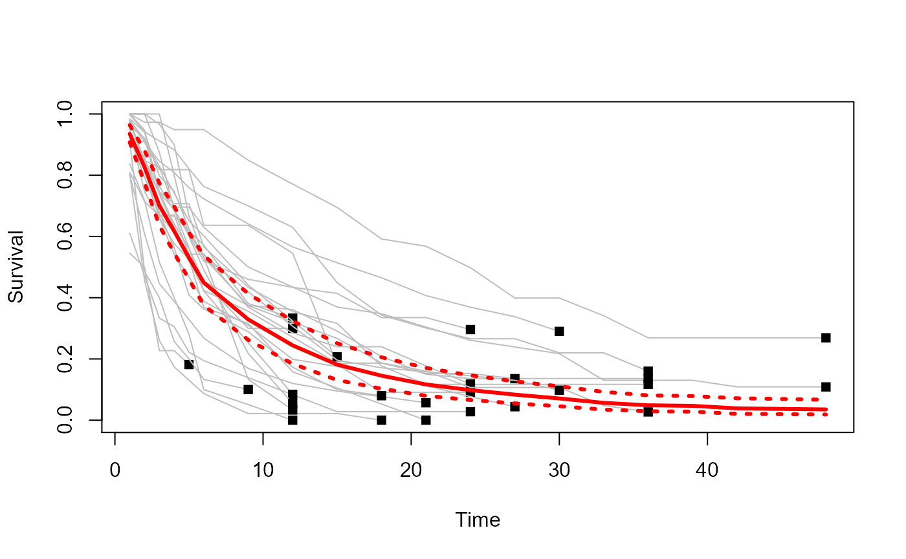
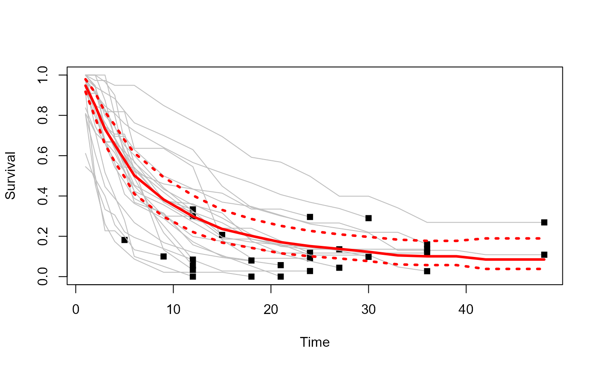

First start with loading the example dataset.
data(exampleData)
attach(exampleData)
head(exampleData)
#> Study FirstAuthor YearPub Time Survival NbRisk Location Design
#> 1 1 Lai 1988 1 0.8043 46 Asia Monocentric
#> 2 1 Lai 1988 2 0.4565 37 Asia Monocentric
#> 3 1 Lai 1988 3 0.2609 21 Asia Monocentric
#> 4 1 Lai 1988 4 0.1739 12 Asia Monocentric
#> 5 1 Lai 1988 5 0.1304 8 Asia Monocentric
#> 6 1 Lai 1988 6 0.0870 6 Asia MonocentricComputation of summary survival with continuity correction.
results<-msurv(Study, Time, NbRisk, Survival, confidence="Greenwood",correctionFlag = T,correctionVal = c(0.25,0.5))
results
#> $verif.data
#> Sstudy check
#> 1 1 1
#> 2 2 1
#> 3 3 1
#> 4 4 1
#> 5 5 1
#> 6 6 1
#> 7 7 1
#> 8 8 1
#> 9 9 1
#> 10 10 1
#> 11 11 1
#> 12 12 1
#> 13 13 1
#> 14 14 1
#> 15 15 1
#> 16 16 1
#> 17 17 1
#> 18 18 1
#> 19 19 1
#> 20 20 1
#> 21 21 1
#> 22 22 1
#> 23 23 1
#> 24 24 1
#> 25 25 1
#> 26 26 1
#> 27 27 1
#>
#> $summary.fixed
#> IndiceTimes PooledSurvivalFE PooledSurvivalICinfFE PooledSurvivalICsupFE
#> [1,] 1 0.94497450 0.93455418 0.95551100
#> [2,] 2 0.84347436 0.82683765 0.86044583
#> [3,] 3 0.73872717 0.71857893 0.75944035
#> [4,] 4 0.66245129 0.64073764 0.68490079
#> [5,] 5 0.58662304 0.56399133 0.61016291
#> [6,] 6 0.52144090 0.49844475 0.54549799
#> [7,] 9 0.40882896 0.38592475 0.43309252
#> [8,] 12 0.32461488 0.30222075 0.34866838
#> [9,] 15 0.26174091 0.23995379 0.28550624
#> [10,] 18 0.21983127 0.19855264 0.24339029
#> [11,] 21 0.18810271 0.16733508 0.21144777
#> [12,] 24 0.16086195 0.14062988 0.18400476
#> [13,] 27 0.13906070 0.11917994 0.16225783
#> [14,] 30 0.12241028 0.10252475 0.14615276
#> [15,] 33 0.09697105 0.07643349 0.12302702
#> [16,] 36 0.08104941 0.06104672 0.10760623
#> [17,] 39 0.07799121 0.05761503 0.10557365
#> [18,] 42 0.06960868 0.04863084 0.09963571
#> [19,] 45 0.06635655 0.04527093 0.09726311
#> [20,] 48 0.06295069 0.04180072 0.09480195
#>
#> $median.fixed
#> 2.5% 97.5%
#> 6.571189 5.970189 7.147286
#>
#> $mean.fixed
#> 2.5% 97.5%
#> 12.06584 11.27690 12.74933
#>
#> $heterogeneity
#> [1] 731.217128 2.521438 60.340098
#>
#> $summary.random
#> IndiceTimes PooledSurvivalRE PooledSurvivalICinfRE PooledSurvivalICsupRE
#> [1,] 1 0.93524921 0.90753843 0.96380610
#> [2,] 2 0.82628083 0.77535470 0.88055185
#> [3,] 3 0.70123428 0.63503595 0.77433335
#> [4,] 4 0.61766270 0.54632825 0.69831133
#> [5,] 5 0.53060766 0.45992592 0.61215181
#> [6,] 6 0.44916320 0.37511275 0.53783184
#> [7,] 9 0.32921715 0.26232834 0.41316134
#> [8,] 12 0.24431166 0.18426527 0.32392532
#> [9,] 15 0.18160515 0.13130502 0.25117417
#> [10,] 18 0.14534074 0.10284269 0.20540041
#> [11,] 21 0.11674507 0.07979975 0.17079517
#> [12,] 24 0.09822802 0.06593733 0.14633204
#> [13,] 27 0.08346181 0.05491511 0.12684802
#> [14,] 30 0.07097460 0.04554526 0.11060193
#> [15,] 33 0.05659698 0.03461920 0.09252720
#> [16,] 36 0.04869511 0.02927924 0.08098617
#> [17,] 39 0.04682745 0.02783640 0.07877493
#> [18,] 42 0.03866701 0.02088712 0.07158177
#> [19,] 45 0.03689963 0.01966964 0.06922256
#> [20,] 48 0.03516081 0.01850465 0.06680927
#>
#> $median.random
#> 2.5% 97.5%
#> 5.375810 4.491944 6.722896
#>
#> $mean.random
#> 2.5% 97.5%
#> 9.554813 7.808363 11.541877Plot the estimates summary survival
RandomEffectSummary<- results$summary.random
plot(Time, Survival, type="n", col="grey", ylim=c(0,1),xlab="Time",
ylab="Survival")
for (i in unique(sort(Study))){
lines(Time[Study==i], Survival[Study==i], type="l", col="grey")
points(max(Time[Study==i]),
Survival[Study==i & Time==max(Time[Study==i])], pch=15)
}
lines(RandomEffectSummary[,1], RandomEffectSummary[,2], type="l",
col="red", lwd=3)
points(RandomEffectSummary[,1], RandomEffectSummary[,3], type="l",
col="red", lty=3, lwd=3)
points(RandomEffectSummary[,1], RandomEffectSummary[,4], type="l",
col="red", lty=3, lwd=3)
Computation of summary survival without continuity correction.
results<-msurv(Study, Time, NbRisk, Survival, confidence="Greenwood",correctionFlag = F)
results
#> $verif.data
#> Sstudy check
#> 1 1 1
#> 2 2 1
#> 3 3 1
#> 4 4 1
#> 5 5 1
#> 6 6 1
#> 7 7 1
#> 8 8 1
#> 9 9 1
#> 10 10 1
#> 11 11 1
#> 12 12 1
#> 13 13 1
#> 14 14 1
#> 15 15 1
#> 16 16 1
#> 17 17 1
#> 18 18 1
#> 19 19 1
#> 20 20 1
#> 21 21 1
#> 22 22 1
#> 23 23 1
#> 24 24 1
#> 25 25 1
#> 26 26 1
#> 27 27 1
#>
#> $summary.fixed
#> IndiceTimes PooledSurvivalFE PooledSurvivalICinfFE PooledSurvivalICsupFE
#> [1,] 1 0.9508837 0.93115618 0.9710293
#> [2,] 2 0.8542395 0.82202310 0.8877185
#> [3,] 3 0.7529489 0.71356234 0.7945096
#> [4,] 4 0.6801444 0.63752795 0.7256097
#> [5,] 5 0.6081467 0.56352148 0.6563058
#> [6,] 6 0.5449696 0.49936809 0.5947354
#> [7,] 9 0.4303415 0.38446782 0.4816886
#> [8,] 12 0.3452733 0.30011887 0.3972213
#> [9,] 15 0.2814425 0.23729653 0.3338012
#> [10,] 18 0.2411057 0.19773211 0.2939935
#> [11,] 21 0.2109529 0.16828161 0.2644443
#> [12,] 24 0.1858428 0.14380950 0.2401619
#> [13,] 27 0.1671095 0.12528742 0.2228921
#> [14,] 30 0.1549979 0.11269730 0.2131760
#> [15,] 33 0.1322367 0.08722757 0.2004703
#> [16,] 36 0.1201395 0.07462625 0.1934106
#> [17,] 39 0.1201395 0.07462625 0.1934106
#> [18,] 42 0.1144864 0.06665886 0.1966300
#> [19,] 45 0.1144864 0.06665886 0.1966300
#> [20,] 48 0.1144864 0.06665886 0.1966300
#>
#> $median.fixed
#> 2.5% 97.5%
#> 7.176926 5.941593 8.344430
#>
#> $mean.fixed
#> 2.5% 97.5%
#> 13.46370 11.44973 14.71442
#>
#> $heterogeneity
#> [1] 219.6071244 0.7572659 0.0000000
#>
#> $summary.random
#> IndiceTimes PooledSurvivalRE PooledSurvivalICinfRE PooledSurvivalICsupRE
#> [1,] 1 0.94768647 0.91731470 0.9790638
#> [2,] 2 0.84755282 0.78823478 0.9113348
#> [3,] 3 0.73182809 0.65606515 0.8163402
#> [4,] 4 0.65409564 0.56903170 0.7518757
#> [5,] 5 0.57872161 0.49473929 0.6769600
#> [6,] 6 0.50184228 0.41034422 0.6137425
#> [7,] 9 0.38269038 0.29711268 0.4929171
#> [8,] 12 0.29890154 0.22167479 0.4030324
#> [9,] 15 0.23629264 0.16877051 0.3308292
#> [10,] 18 0.20208143 0.14274382 0.2860853
#> [11,] 21 0.17082971 0.11580178 0.2520064
#> [12,] 24 0.15126442 0.10079984 0.2269937
#> [13,] 27 0.13757394 0.09019805 0.2098337
#> [14,] 30 0.12300453 0.07677350 0.1970747
#> [15,] 33 0.10536383 0.06049565 0.1835097
#> [16,] 36 0.10074068 0.05720945 0.1773952
#> [17,] 39 0.10074068 0.05720945 0.1773952
#> [18,] 42 0.08499342 0.03811229 0.1895420
#> [19,] 45 0.08499342 0.03811229 0.1895420
#> [20,] 48 0.08499342 0.03811229 0.1895420
#>
#> $median.random
#> 2.5% 97.5%
#> 6.046385 4.819202 8.469110
#>
#> $mean.random
#> 2.5% 97.5%
#> 11.929471 9.110426 14.442102Plot the estimates summary survival
RandomEffectSummary<- results$summary.random
plot(Time, Survival, type="n", col="grey", ylim=c(0,1),xlab="Time",
ylab="Survival")
for (i in unique(sort(Study))){
lines(Time[Study==i], Survival[Study==i], type="l", col="grey")
points(max(Time[Study==i]),
Survival[Study==i & Time==max(Time[Study==i])], pch=15)
}
lines(RandomEffectSummary[,1], RandomEffectSummary[,2], type="l",
col="red", lwd=3)
points(RandomEffectSummary[,1], RandomEffectSummary[,3], type="l",
col="red", lty=3, lwd=3)
points(RandomEffectSummary[,1], RandomEffectSummary[,4], type="l",
col="red", lty=3, lwd=3)